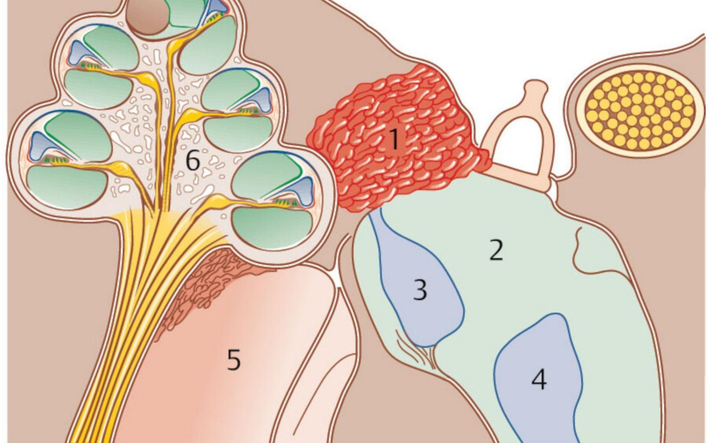
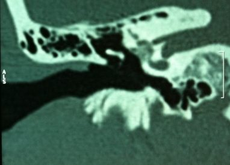
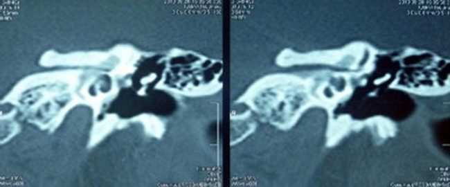
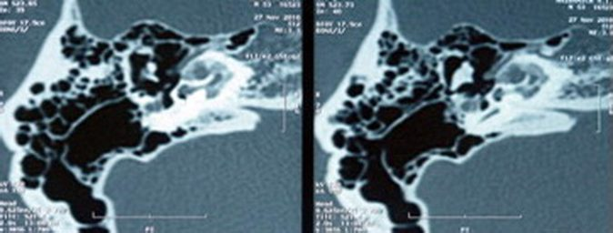
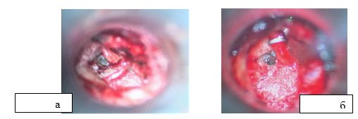

Сверка с PDF рубрикатора выполняется…
Отосклероз
Клинические рекомендации от 18.03.2024 · взрослые и дети
Основные положения
- Клиническая картина:
- прогрессирующее снижение слуха на одно или оба уха;
- шум в ушах;
- при отомикроскопии барабанная перепонка не изменена.
- Тональная пороговая аудиометрия всем пациентам:
- двустороннее повышение порогов воздушной проводимости на низких и средних частотах (0,125–2 кГц);
- чаще восходящая кривая;
- костно-воздушный интервал.
- Акустическая импедансометрия:
- тимпанограмма типа A или As;
- отсутствие акустического рефлекса.
- Стапедопластика:
- возраст старше 15 лет;
- кондуктивная или смешанная тугоухость;
- костно-воздушный интервал не менее 25–30 дБ;
- нет признаков активного отосклероза;
- нет общих противопоказаний.
- Инактивирующая терапия взрослым:
- кохлеарная форма;
- активные очаги.
- Слуховые аппараты при недостаточном уровне слуха и разборчивости речи:
- после операции;
- кохлеарная форма;
- противопоказания к операции или отказ от неё.
Коды МКБ-10
Клиническая картина и классификация
Определение
Отосклероз: первичное метаболическое поражение костной капсулы ушного лабиринта, особая форма остеодистрофии, как правило двусторонняя и очаговая, в энхондральном слое капсулы.
- резорбция кости с образованием мягких кровенаполненных отоспонгиозных очагов;
- отложение солей кальция и формирование плотной склеротической кости;
- фазы размягчения и склерозирования сменяют друг друга волнообразно.
Патология отосклероза

Этиология
Отосклероз наследуется по аутосомно-доминантному типу; пенетрантность гена составляет 20–40%.
Аудиометрическая классификация
Классификация Н. А. Преображенского и О. К. Патякиной (1973): средние пороги костной проводимости (КП) на частотах 0,5, 1 и 2 кГц по данным тональной пороговой аудиометрии (ТПА).
| Форма | Средний порог КП (0,5–2 кГц) |
|---|---|
| Тимпанальная | до 20 (единица измерения в КР не указана) |
| Смешанная I | 21–30 дБ |
| Смешанная II | более 30 дБ |
| Кохлеарная | более 50 дБ |
Границы форм в КР пересекаются: для смешанной формы II указано «>30 дБ» без верхней границы, для кохлеарной формы «КП >50 дБ». В таблице алгоритма обследования (приложение А3) для смешанной формы указаны пороги КП «до 50 дБ», при этом смешанные формы I и II не разделены.
Другие классификации
- гистологический и клинический отосклероз;
- активная (незрелая, отоспонгиоз) и неактивная (зрелая) стадии; тактика лечения во многом зависит от стадии.
- фенестральная: очаги в области окна преддверия;
- ретрофенестральная: очаги вокруг базального и апикального завитков улитки, в области окна улитки, полукружных каналов и дна внутреннего слухового прохода;
- смешанная.
Очаги единичные и множественные.
Денситометрия капсулы лабиринта- норма: +2000…+2200 HU;
- ниже 1000 HU: активный процесс (деминерализация, отоспонгиоз);
- выше 1000 HU: неактивный.
По интраоперационной картине в нише окна преддверия стапедиальный отосклероз подразделяется на ограниченный, умеренный, распространённый и облитерирующий. Наиболее сложными для стапедопластики являются облитерирующие формы, которые подразделяются на три степени. При 1-й степени подножная пластина стремени равномерно утолщена очагами; при 2-й степени очаги сужают нишу окна преддверия по краям при неизменённой пластине; при 3-й степени очаги сужают нишу и захватывают как пластину, так и суперструктуры стремени.
Клиническая картина
- прогрессирующее, чаще двустороннее снижение слуха;
- шум в одном или обоих ушах: низко- и среднечастотный у половины пациентов, высокочастотный у 10%;
- разборчивость речи в шуме лучше, чем в тишине (paracusis Willisii, паракузия Виллизия): примерно у половины;
- головокружение и нарушение равновесия: лишь у 24%.
Скрыто: наследование, интраоперационная классификация.
В учебнике: тугоухость и заболевания внутреннего уха. Анатомия и физиология: наружное и среднее ухо, внутреннее ухо.
Диагностика
- жалобы на прогрессирующее снижение слуха на одно или оба уха и шум в ушах;
- нормальная отомикроскопическая картина;
- тональная аудиометрия: кондуктивная, смешанная или нейросенсорная тугоухость;
- речевая аудиометрия: 100% разборчивость;
- импедансометрия: тимпанограмма типа A или As, отсутствие акустических рефлексов.
- латерализацию ультразвука и пороги его восприятия;
- КТ височных костей с денситометрией: участки пониженной плотности на фоне плотной однородной капсулы лабиринта;
- фенестральная форма: очаг пониженной плотности в промонториальной стенке кпереди от окна преддверия;
- кохлеарная форма: очаги повторяют ход завитков улитки и распространяются до стенок внутреннего слухового прохода.
В критериях диагноза для смешанной формы указано, что ей свойственны признаки, «характерные, как для фенестральной, так и смешанной форм». По смыслу, вероятно, имелась в виду кохлеарная форма.
Жалобы и анамнез
- постепенное, без видимой причины;
- как правило, двустороннее;
- темп зависит от возраста начала (в «Подробнее»).
Шум в одном или обоих ушах (уточняют у всех).
Шум, как правило, низко- и среднечастотный (у 50%), реже высокочастотный (у 10%). В начале заболевания он ощущается только в тишине, по мере нарастания тугоухости усиливается.Улучшение слуха в шумной обстановке (уточняют у всех).
Паракузия Виллизия встречается примерно у половины пациентов, чаще при выраженной фиксации стремени с сохранной костной проводимостью. При переходе тугоухости в смешанную форму этот симптом выявляется реже.Головокружение и нарушения равновесия (уточняют у всех).
Эти жалобы предъявляют около 24% пациентов с отосклерозом. Их связывают с внутрилабиринтной гипертензией, поскольку после операции данные расстройства регрессируют.Отомикроскопия
- все пациенты: отомикроскопия или отоэндоскопия.
- барабанная перепонка целостная, опознавательные знаки чёткие;
- характерные признаки отосклероза только у 10–21% пациентов (в «Подробнее»).
К ним относятся симптом Лемперта (истончение барабанной перепонки с изменением её цвета вследствие атрофии фиброзного слоя), симптом Хилова (истончение кожи слухового прохода), симптом Тойнби (отсутствие или малое количество серы), симптом Швартца (просвечивание расширенных сосудов мыса через истончённую барабанную перепонку; является признаком активной стадии, встречается у 50%) и симптом Вирховского–Тилло (снижение чувствительности кожи слухового прохода и барабанной перепонки, снижение потоотделения, широкий слуховой проход). Ни один из этих симптомов не является патогномоничным, они оцениваются только в совокупности с другими проявлениями заболевания.
Лабораторные исследования
Специфической лабораторной диагностики нет; анализы нужны при подготовке к плановой операции.
Камертональные пробы
- все пациенты: скрининговая оценка характера тугоухости (Ринне, Федеричи, Вебер).
- камертоны C128–C512: костно-воздушный интервал (Ринне, Федеричи) и хуже слышащее ухо (Вебер), это показание к тональной аудиометрии;
- кохлеарная форма: пробы Ринне и Федеричи положительные, звук в пробе Вебера латерализуется в лучше слышащее ухо.
Тональная и речевая аудиометрия
- все пациенты: форма и степень тугоухости.
- пороги воздушной (ВП) и костной проводимости, костно-воздушный интервал (КВИ, резерв улитки);
- двустороннее повышение порогов ВП на 0,125–2 кГц, чаще восходящая кривая с небольшим подъёмом;
- по мере прогрессирования повышаются и пороги КП;
- по типу кривой: тимпанальная, смешанная, кохлеарная форма.
Теория Р. Кархарта объясняет механическую природу сенсоневрального компонента нарушением микромеханики и гидродинамики улитки на частотах 0,5–2 кГц.
По данным речевой аудиометрии разборчивость речи составляет 100%.
Чувствительность к ультразвуку
- все пациенты: оценка характера тугоухости по чувствительности к ультразвуку и его латерализации.
- пороги восприятия ультразвука до 15 дБ; при кохлеарной форме норма или незначительно повышены;
- кохлеарная форма с односторонней или асимметричной тугоухостью: латерализация в лучше слышащее ухо;
- латерализация в хуже слышащее ухо (60,9%): возможен гидропс лабиринта; характерно при длительности заболевания более 10 лет, подтверждается экстратимпанальной электрокохлеографией (ЭКоГ).
Очаги могут вовлекать утрикулярный нерв и сдавливать эндолимфатический проток, а выраженная обструкция его дистального отдела может приводить к расширению саккулюса вплоть до контакта с основанием стремени. Однако ни одна методика не позволяет с полной уверенностью выявить гидропс лабиринта и установить его эндо- или перилимфатический характер, хотя это имеет значение для определения показаний к операции и её результата.
Акустическая импедансометрия
- все пациенты: тимпанометрия и акустическая рефлексометрия.
- исключение патологии среднего уха;
- оценка давления в среднем ухе, функции слуховой трубы, подвижности барабанной перепонки, состояния цепи слуховых косточек.
- тимпанограмма типа A или As;
- отсутствие акустического рефлекса.
Акустическая импедансометрия является комплексным методом, включающим тимпанометрию, определение акустического импеданса (сопротивления) и акустического миорефлекса.
Данные аудиологического исследования при различных формах приложение А3 к КР
| Показатель | Тимпанальная | Смешанная | Кохлеарная |
|---|---|---|---|
| Тональная аудиометрия: вид кривой; пороги КП (0,5–2 кГц); КВИ | горизонтальная; до 20 дБ; 30–50 дБ | пологонисходящая; до 50 дБ; 30 дБ | крутонисходящая; выше 50 дБ; менее 10 дБ |
| Разборчивость речи | 100% | 100% | 100% |
| Пороги чувствительности к ультразвуку (в КР единица «вт») | 10 | 10–15 | более 15 |
| Феномен ускоренного нарастания громкости (ФУНГ) | не выявляется | редко | часто |
| Тимпанометрия | тип A | тип A | тип A |
| МСКТ височных костей | фенестральная локализация очагов | фенестральная и улитковая локализация очагов | часто деминерализация улитки |
Мультиспиральная КТ височных костей с денситометрией
- все пациенты: подтверждение диагноза, локализация и распространённость очагов, оценка их активности.
- неотосклеротическая фиксация цепи слуховых косточек;
- дегисценция верхнего полукружного канала;
- расширение водопровода преддверия;
- остеодистрофии (синдром Ван-дер-Хуве);
- облитерирующий отосклероз;
- оссификация окна улитки и лабиринта.
Снижение плотности капсулы лабиринта с нормальных +2000…+2200 до +1500…+300 HU: начальная или далеко зашедшая деминерализация.
- очаги чаще в области впередиоконной щели и переднего полюса основания стремени с переходом на переднюю ножку;
- плотность зрелых очагов +1000…+1100 HU;
- плотность +500…+800 HU: вероятен активный отосклероз (отоспонгиоз);
- тугоухость от тимпанальной до смешанной формы.
Активная форма отосклероза

При смешанной форме, помимо фенестральных очагов, определяются участки пониженной плотности капсулы вокруг улитки с переходом на область окна улитки, в ряде случаев до дна внутреннего слухового прохода. На аудиограмме при этом может регистрироваться смешанная тугоухость 1–2 степени.
Смешанная форма отосклероза

При кохлеарном отосклерозе в начальной стадии в капсуле вокруг улитки определяются участки плотностью +1500…+1100 HU. В умеренно активной стадии вокруг базального и апикального завитков визуализируются отчётливые участки плотностью +1000…+600 HU, которые часто переходят на область окна улитки и могут распространяться до дна внутреннего слухового прохода и горизонтального полукружного канала.
Кохлеарная форма отосклероза

В стадии высокой активности деминерализация распространяется на капсулу на уровне базального и апикального завитков, может достигать преддверия и полукружных каналов, плотность составляет +300…+600 HU. В этой стадии возможна костная облитерация структур лабиринта, чаще всего базального завитка и горизонтального полукружного канала.
Плотность активных очагов в КР указана неодинаково: в тексте о фенестральной форме +500…+800 HU, в подписи к рисунку 1 +300…+800 HU. В подписи к рисунку 3 для кохлеарной формы указано +600…+800 HU, тогда как в тексте рядом приведены значения +1000…+600 HU для умеренной и +300…+600 HU для высокой активности.
МСКТ позволяет установить и причину неудачной стапедопластики: оценить положение протеза и глубину его погружения в преддверие, выявить некроз длинной ножки наковальни, перилимфатическую фистулу и гранулему окна преддверия.
Скрыто: отоскопические симптомы, гидропс лабиринта, определение импедансометрии, подробности МСКТ при смешанной и кохлеарной формах, МСКТ после операции.
Лечение
Инактивирующая терапия
- кохлеарная форма;
- тимпанальная и смешанная формы в активной стадии перед операцией;
- активный отосклероз, выявленный во время операции.
Цель: инактивация очагов отоспонгиоза.
- снижает активность отосклероза;
- замедляет нарастание сенсоневрального компонента;
- повышает плотность капсулы лабиринта;
- уменьшает вероятность реоссификации после операции;
- останавливает рост очагов и препятствует облитерации улитки.
Число курсов определяют по плотности очагов отоспонгиоза по данным МСКТ височных костей с денситометрией. Все препараты комплекса в КР отмечены знаком #, что обозначает применение вне инструкции.
Схема одного курса у взрослых раздел 3.1 КР
| Препарат | Доза |
|---|---|
| Ибандроновая кислотаoff-label | Внутривенно болюсом за 15–30 секунд 3 мг/3 мл однократно в процедурном кабинете, 1 раз в 3 месяца, или внутрь 150 мг 1 раз в месяц за час до еды, запивая стаканом воды. |
| Алендроновая кислотаoff-label | Вместо ибандроновой кислоты: 70 мг 1 раз в неделю за час до еды, запивая стаканом воды. |
| Кальция глюконатoff-label | 500 мг 3 раза в день после еды. |
| Натрияoff-label фторид | 30–60 мг (0,5 мг/кг) в течение 2 месяцев. |
| Альфакальцидолoff-label | 0,25 мкг 1 раз в день. |
Курс 3 месяца. По плотности очагов назначают 1, 2 или 4 курса с интервалами по 3 месяца до достижения плотности +1000…+1500 HU.
| Плотность очагов по МСКТ | Число курсов |
|---|---|
| ниже +300 HU | 4 |
| +300…+600 HU | 2 |
| +600…+900 HU | 1 |
Активными в КР считаются очаги плотностью ниже 1000 HU, однако число курсов указано только для очагов до +900 HU: для очагов +900…+1000 HU схема не приведена.
Стапедопластика
- жалобы на снижение слуха и шум в ухе;
- кондуктивная или смешанная тугоухость с КВИ не менее 30 дБ;
- нет признаков активного отосклероза по отомикроскопии и МСКТ с денситометрией;
- нет перфорации барабанной перепонки и инфекции слухового прохода;
- нет общих противопоказаний к плановой операции.
Стапедопластика пациентам старше 15 лет при кондуктивной или смешанной тугоухости с КВИ не менее 25–30 дБ, без признаков активного отосклероза (отомикроскопия, КТ с денситометрией) и общих противопоказаний.
Операция является паллиативной. В пользу её выполнения свидетельствует то, что в неоперированных ушах нейросенсорный компонент нарастает в большей степени, чем в оперированных.- острый воспалительный процесс, обострение хронического;
- декомпенсация сопутствующих заболеваний.
- активный отосклероз;
- единственное слышащее ухо;
- расширенный водопровод преддверия по МСКТ: описаны случаи глухоты после операции.
Пороговое значение КВИ для операции в КР приведено трижды и неодинаково: в показаниях к хирургическому лечению (раздел 3.2) не менее 30 дБ, в тексте рекомендации 25–30 дБ, в показаниях к госпитализации (раздел 6) не менее 25 дБ.
Основание стремени вскрывают двумя способами: стапедотомия (методика малого окна, поршневая) или стапедэктомия (методика большого окна, частичная или тотальная). Протезы изготавливаются из алло- и аутотканей и биосовместимых материалов (тефлон, керамика, пластипор, сталь, титан, платина); сухожилие стременной мышцы и наковальне-стременное сочленение сохраняются или не сохраняются, окно преддверия изолируется аутотканью (вена, жир, клетчатка, фасция) или не изолируется.
Наибольшее распространение в мире получила поршневая методика J. Shea (1962) ввиду минимальной травматичности для внутреннего уха и простоты выполнения; она обеспечивает КВИ не более 10 дБ у 58–98% пациентов.
Этапы поршневой стапедопластики

Эффективны как стапедотомия, так и частичная стапедэктомия; при стапедэктомии сокращение КВИ в раннем послеоперационном периоде происходит быстрее. Сенсоневральная тугоухость после операции развивается у 3,5–5,9% пациентов, глухота у 0,9–2%.
- до операции: возраст, жалобы, анамнез, пороги КП и КВИ, строение височной кости по МСКТ;
- во время операции: распространённость и активность очагов, строение ниши окна преддверия и канала лицевого нерва, кровоточивость тканей, давление перилимфы.
- поршневая стапедопластика: молодой возраст (до 40 лет), активные очаги, узкая ниша окна преддверия, распространённые формы с крупными очагами на промонториуме, облитерирующие формы, выраженная кровоточивость;
- аутотканевая стапедопластика: пожилой возраст, особенно при длительном снижении слуха; смешанные формы; расширенный водопровод улитки по МСКТ;
- невозможна аутотканевая: протез на аутовенозный трансплантат.
Выбор методики стапедопластики приложение А3 к КР
| Критерий | Поршневая | Протез на аутовену | Аутоткани |
|---|---|---|---|
| Молодой возраст (до 40 лет) | + | + | – |
| Длительность заболевания более 10 лет | – | – | + |
| Смешанная форма II | – | + | + |
| Активный отосклероз | + | + | – |
| Облитерирующий отосклероз | + | – | – |
| Анатомически узкая ниша окна преддверия | + | + | – |
| Гидропс лабиринта по данным ЭКоГ | + | + | + |
| Расширенный водопровод улитки, дегисценция верхнего полукружного канала и гидропс по данным ЭКоГ (перилимфатический гидропс) | – | + | + |
| Расширенный водопровод преддверия и гидропс по данным ЭКоГ (эндолимфатический гидропс) | – | в КР не заполнено | – |
Чем больше диаметр отверстия в основании стремени и протеза при качественном выполнении операции, тем лучше гидродинамика лабиринта: пороги КП снижаются на 10–20 дБ по всей тон-шкале. При поршневой методике такой эффект не наблюдается.
Доля пациентов с КВИ не более 10 дБ после операции рисунок 7 в тексте КР
| Методика | 10–12 дней | 1 месяц | 3 месяца | 6 месяцев | 1 год |
|---|---|---|---|---|---|
| Аутотканевая | 38% | 78% | 96% | 96% | 100% |
| Поршневая | 20% | 50% | 56% | 78% | 76% |
Кохлеарная имплантация и слухопротезирование
Кохлеарная имплантация взрослым с отосклерозом.
- кохлеарная форма или высокие пороги после стапедопластики с двусторонней тугоухостью 4–5 степени;
- разборчивость простых односложных слов со слуховыми аппаратами на оба уха менее 30%;
- нет патологии улитки по МСКТ и магнитно-резонансной томографии (МРТ);
- достаточная мотивация.
- после операции;
- кохлеарная форма;
- общие противопоказания к операции;
- отказ от операции.
Уровень слуха ниже социального: пороги КП более 30 дБ или ВП более 45 дБ на речевых частотах.
При слухопротезировании учитывают- феномен ускоренного нарастания громкости (после операции и вне связи с ней);
- желание пациента;
- единственное слышащее ухо;
- противопоказания к операции и отказ от неё.
Скрыто: методики стапедопластики, их эффективность и осложнения, результаты по рис. 7.
Алгоритм действий врача при отосклерозе
- 1
Пациент с подозрением на отосклероз
- 2
Диагностика
- 3
Диагноз подтверждён?
- 4
Продолжение диагностического поиска в рамках других возможных заболеваний
конец алгоритма - 5
Есть кохлеарный отосклероз?
- 6
КВИ не менее 30 дБ?
- 7
Стапедопластика
- 8
Контрольное обследование врача-оториноларинголога
конец алгоритма - 9
Слухопротезирование
- 10
Инактивирующая терапия
Медицинская реабилитация. Профилактика и диспансерное наблюдение. Показания к госпитализации
Слухопротезирование при уровне слуха ниже социального (пороги КП более 30 дБ или ВП 45 дБ и более на речевых частотах):
- после операции, в том числе на единственном слышащем ухе;
- при противопоказаниях к операции или отказе от неё;
- при кохлеарной форме.
Методы профилактики отосклероза и диспансерного наблюдения в КР не приведены.
Первичный осмотр пациента выполняют оториноларинголог и сурдолог-оториноларинголог.
Показания к госпитализации
- жалобы на снижение слуха и шум;
- кондуктивная или смешанная тугоухость с КВИ не менее 25 дБ;
- нет признаков активного отосклероза по отомикроскопии и МСКТ;
- нет перфорации барабанной перепонки, инфекции слухового прохода, общих противопоказаний;
- выполнено обследование для госпитализации.
Выписка на 7–10-й день после контрольной тональной аудиометрии:
- пороги КП на дооперационном уровне;
- КВИ в зависимости от методики прежний или сократился за счёт улучшения порогов ВП.
- постельный режим 1–2 суток на противоположном ухе (в зависимости от методики);
- месяц: беречь ухо от воды и громких звуков;
- 3 месяца: не летать на самолёте.
В информации для пациента указано, что операция даёт положительный результат у девяти из десяти пациентов и неэффективна менее чем у 1%.
Скрыто: результаты операции в информации для пациента.
Источник и актуальность
Журнал сверки
Неточности и противоречия в тексте рекомендации
- В алгоритме действий врача (приложение Б) инактивирующая терапия стоит на ветви «Нет» вопроса «Есть кохлеарный отосклероз?», тогда как в разделе 3.1 она рекомендована именно при кохлеарной форме.
- Пороговое значение КВИ для стапедопластики указано трижды и неодинаково: 30 дБ (показания, раздел 3.2), 25–30 дБ (рекомендация), 25 дБ (показания к госпитализации, раздел 6).
- В классификации Преображенского–Патякиной границы смешанной формы II («>30 дБ») и кохлеарной формы («>50 дБ») пересекаются, для тимпанальной формы («до 20») не указана единица измерения; в таблице приложения А3 для смешанной формы указано «до 50 дБ».
- Пороги ультразвука в таблице приложения А3 приведены в ваттах, в тексте раздела 2.4 в децибелах.
- В тексте для отосклероза указана тимпанограмма типа «А» или «As», в таблице приложения А3 только тип А.
- В критериях диагноза для смешанной формы указано «признаки характерные, как для фенестральной, так и смешанной форм», вероятно, вместо «кохлеарной».
- Плотность активных очагов по данным МСКТ в тексте и в подписях к рисункам 1 и 3 не совпадает.
- Число курсов инактивирующей терапии указано только для очагов до +900 HU, хотя активными считаются очаги плотностью ниже 1000 HU.